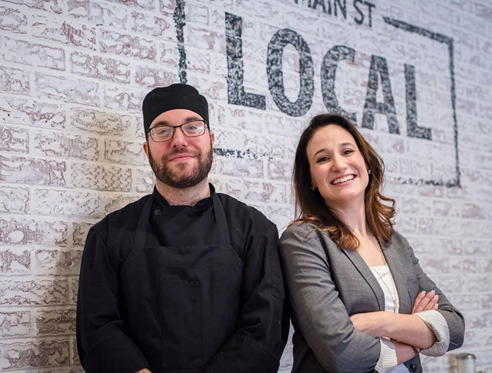

Main St. Local Kitchen was founded with one goal in mind — to bring people together around good food.
From locally sourced ingredients to a warm and welcoming atmosphere, our restaurant is built on the
idea that sharing a meal is sharing a moment.
Our team is passionate about creating dishes that feel familiar yet exciting, honoring the best of
Ontario’s produce while exploring flavors from around the world.
Whether you're here for a quick lunch, a cozy dinner, or a celebration with friends, we’re grateful
to be part of your table.

We Are Local
Main St Local Kitchen is family owned & operated.
Chef/Owner Ryan Clarke went to school here and even
had his first kiss here. Like many, he left his hometown
of Huntsville to live & learn in the industry across
southern Ontario and the GTA.
In 2015, Ryan returned to Muskoka with his wife and
business partner, Christina Clarke, to raise a family,
and buy a restaurant. Together, and with an exceptional
team, they’ve re-branded an iconic spot and built a
business that is all about real food, real folks and
bringing people to the table. Stop in for a meal and
share a conversation.